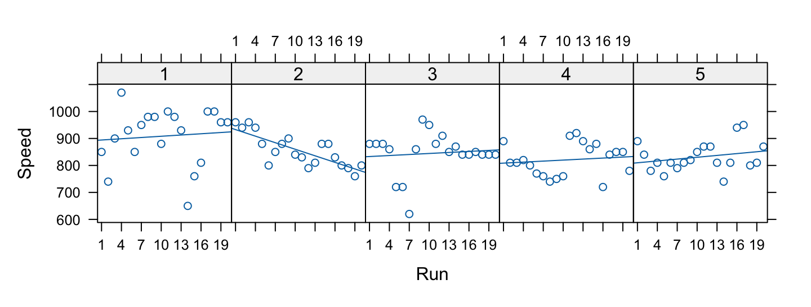

library(nlme)
kiwishade <- DAAG::kiwishade
kiwishade$plot <- factor(paste(kiwishade$block, kiwishade$shade,
sep="."))
kiwishade.lme <- lme(yield~shade,random=~1|block/plot, data=kiwishade)
summary(kiwishade.lme)
Linear mixed-effects model fit by REML
Data: kiwishade
AIC BIC logLik
265.9663 278.4556 -125.9831
Random effects:
Formula: ~1 | block
(Intercept)
StdDev: 2.019373
Formula: ~1 | plot %in% block
(Intercept) Residual
StdDev: 1.478623 3.490381
Fixed effects: yield ~ shade
Value Std.Error DF t-value p-value
(Intercept) 100.20250 1.761617 36 56.88098 0.0000
shadeAug2Dec 3.03083 1.867621 6 1.62283 0.1558
shadeDec2Feb -10.28167 1.867621 6 -5.50522 0.0015
shadeFeb2May -7.42833 1.867621 6 -3.97743 0.0073
Correlation:
(Intr) shdA2D shdD2F
shadeAug2Dec -0.53
shadeDec2Feb -0.53 0.50
shadeFeb2May -0.53 0.50 0.50
Standardized Within-Group Residuals:
Min Q1 Med Q3 Max
-2.41538976 -0.59814252 -0.06899575 0.78046182 1.58909233
Number of Observations: 48
Number of Groups:
block plot %in% block
3 12
anova(kiwishade.lme)
numDF denDF F-value p-value
(Intercept) 1 36 5190.560 <.0001
shade 3 6 22.211 0.0012
intervals(kiwishade.lme)
Approximate 95% confidence intervals
Fixed effects:
lower est. upper
(Intercept) 96.629775 100.202500 103.775225
shadeAug2Dec -1.539072 3.030833 7.600738
shadeDec2Feb -14.851572 -10.281667 -5.711762
shadeFeb2May -11.998238 -7.428333 -2.858428
Random Effects:
Level: block
lower est. upper
sd((Intercept)) 0.5475859 2.019373 7.446993
Level: plot
lower est. upper
sd((Intercept)) 0.3700762 1.478623 5.907772
Within-group standard error:
lower est. upper
2.770652 3.490381 4.397072 8 Multi-Level Models and Repeated Measures Models
Models have both a fixed effects structure and an error structure. For example, in an inter-laboratory comparison there may be variation between laboratories, between observers within laboratories, and between multiple determinations made by the same observer on different samples. If we treat laboratories and observers as random, the only fixed effect is the mean.
The functions lme() and nlme(), from the Pinheiro and Bates nlme package, handle models in which a repeated measures error structure is superimposed on a linear (lme4()) or non-linear (nlme()) model. The lme() function is broadly comparable to Proc Mixed in the widely used SAS statistical package. The function lme() has associated with it important abilities for diagnostic checking and other insight.
There is a strong link between a wide class of repeated measures models and time series models. In the time series context there is usually just one realization of the series, which may however be observed at a large number of time points. In the repeated measures context there may be a large number of realizations of a series that is typically quite short.
8.1 Multi-level models – examples
The Kiwifruit Shading Data, Again
Refer back to Section 3.8 for details of the data. The fixed effects are block and treatment (shade). The random effects are block (though making block a random effect is optional, for purposes of comparing treatments), plot within block, and units within each block/plot combination. Here is the analysis:
We are interested in the three sd estimates. By squaring the standard deviations and converting them to variances we get the information in the following table:
| Variance component | Notes | |
|---|---|---|
| block | 2.0192\(^2\) = 4.076 | Three blocks |
| plot | 1.4792\(^2\) = 2.186 | 4 plots per block |
| residual (within group) | 3.4902\(^2\)=12.180 | 4 vines (subplots) per plot |
The above gives the information for an analysis of variance table. We have:
| Variance component | Mean square for anova table | d.f. | |
|---|---|---|---|
| block | 4.076 | 12.180 + 4 \(\times\) 2.186 + 16 \(\times\) 4.076 = 86.14 | 2 (3-1) |
| plot | 2.186 | 12.180 + 4 \(\times\) 2.186 = 20.92 | 6 (3-1)\(\times\)(4-1) |
| residual (within gp) | 12.180 | 12.18 | 3 \(\times\) 4 \(\times\) (4-1) |
Now see where these same pieces of information appeared in the analysis of variance table of Section 3.8:
kiwishade.aov<-aov(yield~block+shade+Error(block:shade),data=kiwishade)
Warning in aov(yield ~ block + shade + Error(block:shade), data = kiwishade):
Error() model is singular
summary(kiwishade.aov)
Error: block:shade
Df Sum Sq Mean Sq F value Pr(>F)
block 2 172.3 86.2 4.118 0.07488
shade 3 1394.5 464.8 22.211 0.00119
Residuals 6 125.6 20.9
Error: Within
Df Sum Sq Mean Sq F value Pr(>F)
Residuals 36 438.6 12.18 The Tinting of Car Windows
In Section 2.8 we encountered data from an experiment that aimed to model the effects of the tinting of car windows on visual performance . The authors are mainly interested in effects on side window vision, and hence in visual recognition tasks that would be performed when looking through side windows. Data are in the data frame tinting. In this data frame, csoa (critical stimulus onset asynchrony, i.e. the time in milliseconds required to recognise an alphanumeric target), it (inspection time, i.e. the time required for a simple discrimination task) and age are variables, while tint (3 levels) and target (2 levels) are ordered factors. The variable sex is coded 1 for males and 2 for females, while the variable agegp is coded 1 for young people (all in their early 20s) and 2 for older participants (all in the early 70s).
We have two levels of variation – within individuals (who were each tested on each combination of tint and target), and between individuals. So we need to specify id (identifying the individual) as a random effect. Plots such as we examined in Section 2.8 make it clear that, to get variances that are approximately homogeneous, we need to work with log(csoa) and log(it). Here we examine the analysis for log(it). We start with a model that is likely to be more complex than we need (it has all possible interactions):
tinting <- DAAG::tinting
itstar.lme<-lme(log(it)~tint*target*agegp*sex,
random=~1|id, data=tinting,method="ML")A reasonable guess is that first order interactions may be all we need, i.e.
it2.lme<-lme(log(it)~(tint+target+agegp+sex)^2,
random=~1|id, data=tinting,method="ML")Finally, there is the very simple model, allowing only for main effects:
it1.lme<-lme(log(it)~(tint+target+agegp+sex),
random=~1|id, data=tinting,method="ML")Note that all these models have been fitted by maximum likelihood. This allows the equivalent of an analysis of variance comparison.
Here is what we get:
anova(itstar.lme,it2.lme,it1.lme)
Model df AIC BIC logLik Test L.Ratio p-value
itstar.lme 1 26 8.146187 91.45036 21.926906
it2.lme 2 17 -3.742883 50.72523 18.871441 1 vs 2 6.11093 0.7288
it1.lme 3 8 1.138171 26.77022 7.430915 2 vs 3 22.88105 0.0065The model that limits attention to first order interactions appears adequate. As a preliminary to examining the first order interactions individually, we re-fit the model used for it2.lme, now with method="REML".
it2.reml<-update(it2.lme,method="REML")We now examine the estimated effects:
options(digits=3)
summary(it2.reml)$tTable
Value Std.Error DF t-value p-value
(Intercept) 3.61907 0.1301 145 27.817 5.30e-60
tint.L 0.16095 0.0442 145 3.638 3.81e-04
tint.Q 0.02096 0.0452 145 0.464 6.44e-01
targethicon -0.11807 0.0423 145 -2.789 5.99e-03
agegpolder 0.47121 0.2329 22 2.023 5.54e-02
sexm 0.08213 0.2329 22 0.353 7.28e-01
tint.L:targethicon -0.09193 0.0461 145 -1.996 4.78e-02
tint.Q:targethicon -0.00722 0.0482 145 -0.150 8.81e-01
tint.L:agegpolder 0.13075 0.0492 145 2.658 8.74e-03
tint.Q:agegpolder 0.06972 0.0520 145 1.341 1.82e-01
tint.L:sexm -0.09794 0.0492 145 -1.991 4.83e-02
tint.Q:sexm 0.00542 0.0520 145 0.104 9.17e-01
targethicon:agegpolder -0.13887 0.0584 145 -2.376 1.88e-02
targethicon:sexm 0.07785 0.0584 145 1.332 1.85e-01
agegpolder:sexm 0.33164 0.3261 22 1.017 3.20e-01Because tint is an ordered factor, polynomial contrasts are used.
The Michelson Speed of Light Data
The MASS::michelson dataframe has columns Speed, Run, and Expt, for five experiments of 20 runs each. A plot of the data seems consistent with sequential dependence within runs, possibly with random variation between runs.

Code is:
michelson <- MASS::michelson
lattice::xyplot(Speed~Run|factor(Expt), layout=c(5,1),
data=michelson, type=c('p','r'),
scales=list(x=list(at=seq(from=1,to=19, by=3))))We try a model that allows the estimates to vary linearly with Run (from 1 to 20), with the slope varying randomly between experiments. We assume an autoregressive dependence structure of order 1. We allow the variance to change from one experiment to another.
To test whether this level of model complexity is justified statistically, one needs to compare models with and without these effects, setting method="ML" in each case, and compare the likelihoods.
michelson <- MASS::michelson
library(nlme)
michelson$Run <- as.numeric(michelson$Run) # Ensure Run is a variable
mich.lme1 <- lme(fixed = Speed ~ Run, data = michelson,
random = ~ Run| Expt, correlation = corAR1(form = ~ 1 | Expt),
weights = varIdent(form = ~ 1 | Expt), method='ML')
mich.lme0 <- lme(fixed = Speed ~ Run, data = michelson,
random = ~ 1| Expt, correlation = corAR1(form = ~ 1 | Expt),
weights = varIdent(form = ~ 1 | Expt), method='ML')
anova(mich.lme0, mich.lme1)
Model df AIC BIC logLik Test L.Ratio p-value
mich.lme0 1 9 1121 1144 -551
mich.lme1 2 11 1125 1153 -551 1 vs 2 2.63e-08 1The simpler model is preferred. Can it be simplified further?
8.2 References and reading
See the vignettes that accompany the lme4 package.
Maindonald and Braun (2010) . Data Analysis and Graphics Using R –- An Example-Based Approach. Cambridge University Press.
Maindonald, Braun, and Andrews (2024, forthcoming) . A Practical Guide to Data Analysis Using R. An Example-Based Approach. Cambridge University Press.
Pinheiro and Bates (2000) . Mixed effects models in S and S-PLUS. Springer.